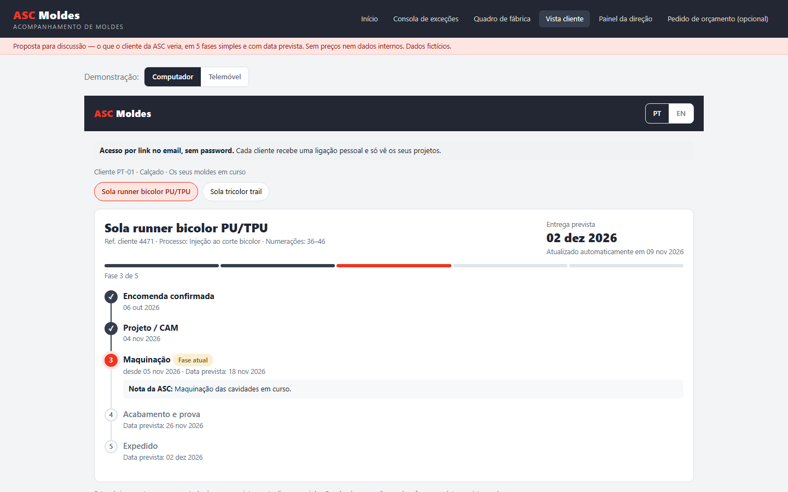
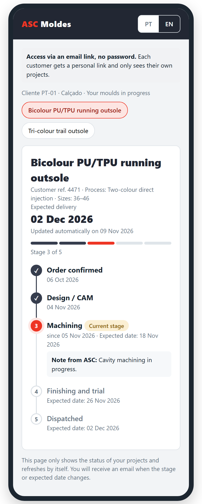
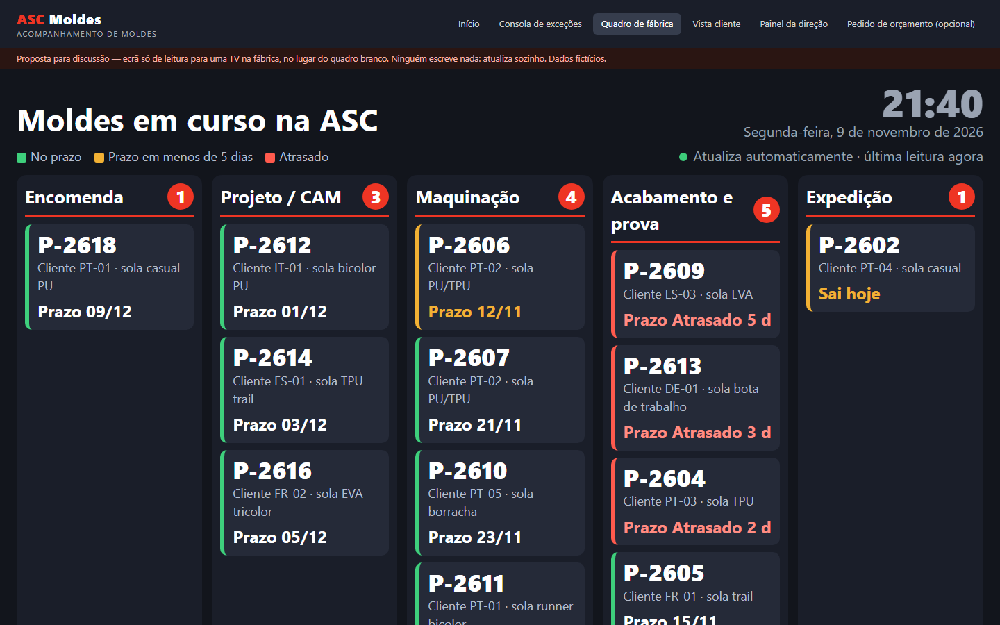
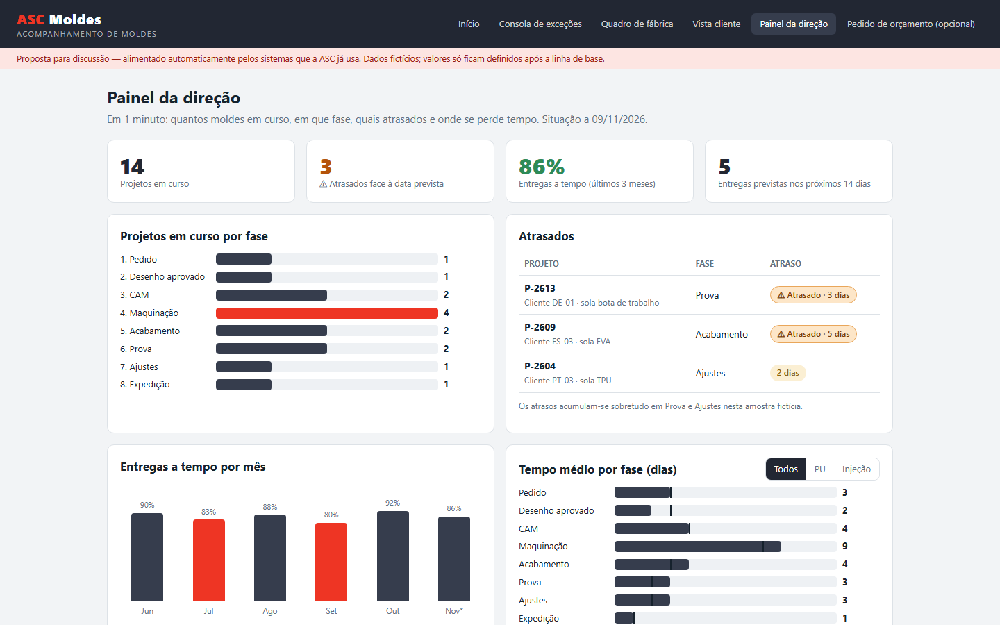
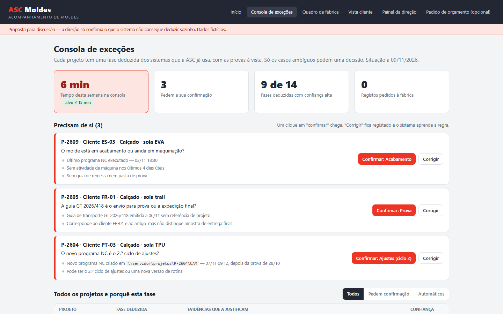

Acompanhamento de Moldes
Proposta para discussão
Proposta preparada para a ASC Moldes pela nossa equipa · novembro de 2026
Documento de trabalho: as hipóteses e os ecrãs servem para corrigirmos em conjunto.
O desafio
Algumas perguntas que gostaríamos de vos fazer
Quando um cliente pergunta "em que ponto está o meu molde?", quantos emails e chamadas são precisos até haver resposta?
A informação sobre cada passo já existe (na encomenda, na pasta do projeto, nos programas de maquinação, na guia de transporte), mas está em sítios diferentes?
O conjunto dos moldes em curso ainda se acompanha num quadro ou folha atualizados à mão?
A direção consegue saber, num minuto, que moldes estão atrasados e em que fase, sem ter de perguntar a ninguém?
São hipóteses nossas, formuladas de fora. Contamos convosco para as confirmar ou corrigir.
A ideia-chave
Não vos pedimos trabalho novo: usamos a informação que já produzem.
O sistema lê o que já existe, deduz a fase de cada molde e só pergunta quando não tem a certeza.
Como funciona
Ler o que já existe, mostrar em três ecrãs
Sistemas existentes
- Encomenda (programa de gestão ou faturação)
- Pasta do projeto
- Programas de maquinação
- Guia de transporte
Só nomes e datas
- Apenas leitura
- Só metadados (quem, quando, que pasta)
- Nunca abre nem copia desenhos
Fase de cada molde
- Com o "porquê" desta fase
- Se houver dúvida, pergunta com 1 clique
- Cada resposta ensina o sistema
Quem vê o quê
- Clientes: vista PT/EN
- Direção: painel de prazos
- Fábrica: quadro em TV


Para os clientes da ASC
"Em que ponto está o meu molde?" sem ter de perguntar
- 5 fases simples e data prevista de entrega
- Em português e inglês, no computador ou telemóvel
- Acesso por link no email, sem palavra-passe; cada cliente só vê os seus projetos
- Email automático quando a fase ou a data mudam
- Só se publica o que tem evidência

Para a fábrica
Um quadro em TV que se atualiza sozinho
- Substitui o quadro branco: ninguém escreve nada
- Moldes em curso por fase, com o prazo de cada um
- Cores simples: no prazo, prazo próximo, atrasado
- Ecrã só de leitura, pensado para ver ao longe

Para a administração
Prazos e entregas num minuto
- Quantos moldes estão em curso e em que fase
- Quais estão atrasados e há quanto tempo
- Entregas a tempo, mês a mês
- Tempo médio por fase, para ver onde se perde tempo
- Cada número mostra de onde vem o dado

Para a direção / planeamento
E quando o sistema não tem a certeza?
- Pergunta, e mostra as provas que tem
- Um clique para confirmar ou corrigir
- Cada correção vira regra: não volta a perguntar o mesmo
- Objetivo: até 15 minutos por semana
- Notas ao cliente escrevem-se aqui, em vez do email habitual
Segurança e confiança
Garantias que ficam escritas no contrato
Só leitura
Não escrevemos em nenhum sistema e não alteramos máquinas nem ficheiros. A vossa informática pode inspecionar o programa instalado e o registo de tudo o que é enviado.
Os desenhos nunca saem da ASC
Lemos apenas nomes e datas. Nunca abrimos, copiamos nem enviamos desenhos, ficheiros CAD/CAM, programas de maquinação ou conteúdos de email.
Dados na UE
Alojamento na União Europeia, ligação só de saída e sem portas abertas na vossa rede. Contrato RGPD e de confidencialidade.
Nunca para avaliar pessoas
Os dados de máquinas e horas nunca são usados para avaliar trabalhadores. Os indicadores são só por projeto, fase e máquina.
O código é da ASC
Com o pagamento integral, o código, a configuração, os dados e a documentação passam para a ASC, com manual de operação e passagem de conhecimento.
Dados sempre vossos
Os dados da ASC podem ser exportados a qualquer momento. Sem dependência de nós para continuar a usar o sistema.
Como avançamos
Começar pequeno, medir, e só depois crescer
Levantamento técnico
~1 semanaCom a vossa informática: que sistemas existem e o que permitem ler. Daqui sai o plano concreto da Fase 1, ajustado ao que já têm.
3 fontes de informação
6 a 8 semanasEncomenda + pasta de projetos + guia de transporte. Vista cliente, painel da direção, quadro em TV e consola de exceções. Modo sombra antes de abrir a 3 a 5 clientes piloto.
Somar fontes, uma a uma
ao vosso ritmoMáquinas CNC, email de aprovação, Excel de planeamento, software de produção. Cada fonte acrescenta-se sem refazer o que já existe.
Como medimos o sucesso
Metas claras, fixadas convosco no fim do modo sombra
tarefas novas para a equipa
das fases deduzidas sem intervenção no fim do piloto (≥ 70% no fim do modo sombra)
por semana da direção em exceções
menos pedidos de estado dos clientes piloto
das fases mostradas ao cliente com necessidade de correção
para responder "quantos moldes atrasados e em que fase"
clientes piloto consultam a vista pelo menos 1 vez por semana
o quadro branco substituído pelo quadro que se atualiza sozinho
A vista cliente só abre se, no fim do modo sombra, as exceções estiverem dentro do alvo. As entregas a tempo acompanham-se como tendência, sem promessa de ganho no piloto.
Próximos passos
Como podemos seguir
Conversa de 30 a 45 min
Corrigir as hipóteses e os ecrãs: onde vive hoje cada informação e o que falta.
30 min com a informática
Perceber que sistemas existem. Nesta fase não pedimos acessos nem palavras-passe.
Levantamento técnico
Cerca de 1 semana. Sai o plano confirmado da Fase 1, com âmbito, calendário e proposta comercial.
Fase 1
6 a 8 semanas, com modo sombra e abertura a 3 a 5 clientes piloto escolhidos pela ASC.
pela nossa equipa · novembro de 2026